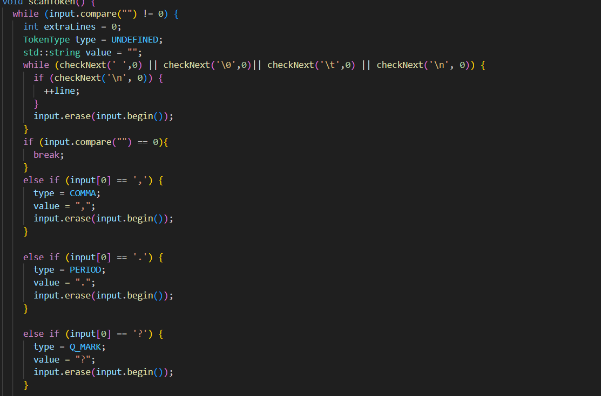
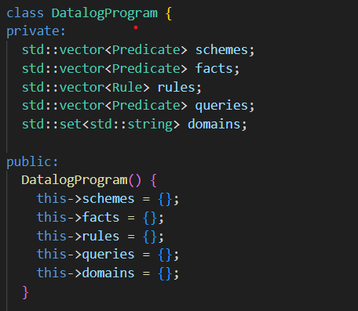
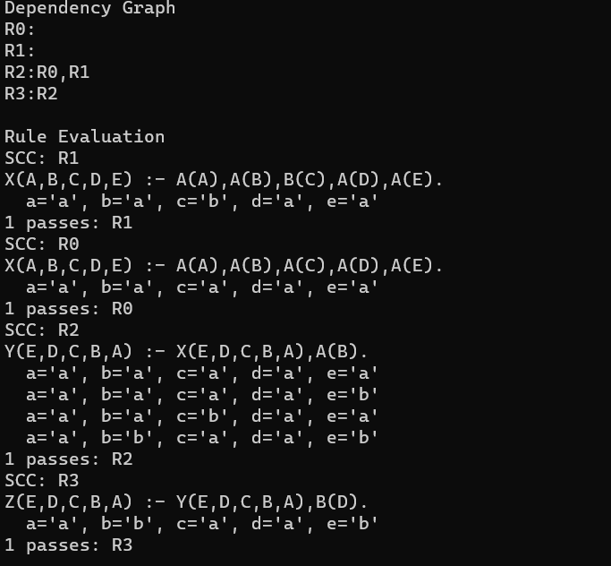
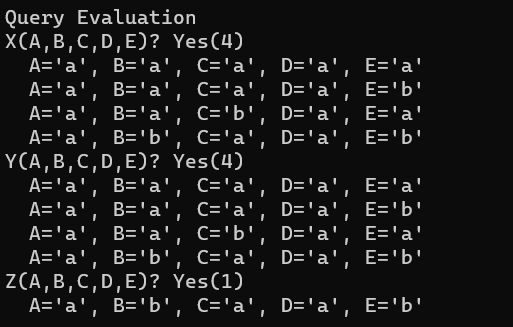

This project is a program that reads plain text from a file in a datalog format and is able to interpret that text to provide answers to certain queries. The project demonstrates an understanding of graph theory and Object Oriented Programming.
The first step in this program is reading text from a txt file. In order to do this, I implemented a state machine that would understand what text should be next, read that text, descide if the text fit withing the guidlines and the interpret that text into objects. If the text was not in the correct format, it would send an error to the system and abort the program. An example segment from the scanning code can be found below.
The scanned tokens will then be seperated out into rules, schemes, facts and queries. These are stored in vectors withing a Datalog objects. The program contains objects for schemes, rules and queries, each containing their own object for names, and object for their values.
The program then begins the task of sorting out all the information in order to find the solutions to all the queries. The first step was to find create a table with all the schemes and to stash the facts under to corresponding schemes. Following this we created a dependency graph based on the rules given in the text. For example if R1 was based on R2 and R2, the R2 and R3 were dependencies of R1. After creating a graph based on the rules the next step is to anaylze the graph and iterate over all the rules adding new facts as they are found until you iterate over all the rules until there are no more facts added. The way in which we anaylze the rules is to first combine all table rules that the rule you are looking at depends on using union, then to only keep the variables that we are focusing on, then rename the rows to what they will be in our table for the rule. By using a set we can monitor when a new fact is added to the table. After analyzing all the rules we will have a full table of all of our facts after implementing the rules.
The last step in the project is to evaluate the queries based on the facts that we have found. In order to do this we first find the relation that will be related to the query by name. We then grab the parameters that are related to our query, letting those not defined be any value. In doing this we can find all solutions to the queries we are given.
